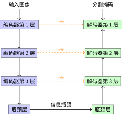

引言：图像分割问题#
从分类到分割：问题升级#
卷积神经网络 中我们学的 CNN 擅长做图像分类：输入一张 28×28 的手写数字，输出"这是 3"。关键在于，分类只需要回答"整体是什么"——即使你只看到数字的一小部分，也能猜出来。
但现实中有很多问题需要 “每个点是什么”：
医学影像：CT 图像中每个像素是肿瘤还是正常组织？
自动驾驶：每个像素是道路、行人、还是天空？
卫星图像：每个像素是农田、建筑、还是水域？
这就是图像分割（Image Segmentation）——对每个像素分配一个类别标签。一张 256×256 的图像有 65,536 个像素，每个都需要预测。
分类 vs 分割的直觉
分类像考试判断题：“这张图里有猫吗？”——看一眼就能答。
分割像做填色游戏：你需要精确地沿着猫的轮廓涂色，一根胡须都不能漏。
后者需要同时知道两件事：
“这是什么”（语义理解）：那是猫，不是狗
“它在哪”（空间精度）：猫的边界到第 237 行 189 列
为什么分类网络不能直接用来做分割？#
直觉上，你可能想把全连接层换成"每个像素一个分类器"。但这里有一个根本矛盾：
卷积神经网络 中我们学了 CNN 的编码过程：卷积+池化逐步下采样，空间尺寸从 28×28 缩小到 1×1。这是分类成功的关键——丢掉位置信息，提炼语义信息（感受野 告诉我们，深层神经元看的区域大，能理解整体）。
但分割需要同时保留位置和语义。下采样丢了位置，直接去不掉。
这就引出了核心问题：如何把缩小的特征图恢复回原始分辨率，同时不丢失细节？
U-Net 的回答：编码器-解码器 + 跳跃连接#
U-Net [RFB15] 的答案今天看来简单而优雅：
编码器（Encoder）：就是标准的 CNN，逐步下采样提取语义——跟你学的 LeNet-5（LeNet-5架构详解）前半部分一样
解码器（Decoder）：对称的上采样路径，逐步恢复空间分辨率
跳跃连接（Skip Connection）：把编码器每一层的特征直接"抄近道"送到对应层的解码器

U 形架构概念图
右边和左边是对称的，中间是跳跃连接——形成了 U 形。U 形架构详解 中有更详细的架构 mermaid 图。
直觉：为什么 U 形能解决"位置 vs 语义"的矛盾？#
你在做一个"从缩略图还原高清图"的任务：
缩略图虽然模糊，但告诉了你"整体是个什么东西"（语义）
你手边有一叠原始高清图的局部截图（编码器每层的特征）
最好的办法：看着缩略图知道整体形状，再参考每张局部截图还原细节
编码器各层的特征图就是那些"局部截图"——浅层保留精确位置，深层提炼抽象语义。跳跃连接把它们直接送到解码器对应层，让解码器同时拥有位置和语义。
与 感受野 中讨论的感受野递推类似，U-Net 每层特征图的感受野不同：
浅层：小感受野，知道"边缘在哪个像素"
深层：大感受野，知道"这是肿瘤还是正常组织"
跳跃连接：同时给小感受野和大感受野的信息
U-Net 的历史意义#
U-Net 由 Olaf Ronneberger 等人在 2015 年提出 [RFB15]，初衷是生物医学图像分割。它的关键贡献不是发明了新东西（卷积、池化、跳跃连接都是现成的），而是把这些组件组合成了一个优雅的对称结构，恰好解决了分割问题的核心矛盾。
在当年的 ISBI 细胞分割挑战赛上，U-Net 用 30 张训练图像就达到了超越所有传统方法的效果——Dice 系数 0.775 vs 第二名 0.460。这在深度学习以"大数据"为王的年代，显得格外引人注目。
与 FCN 的关键区别
在 U-Net 之前，全卷积网络（FCN）[LCWJ15] 已经尝试用 CNN 做分割。但 FCN 的上采样只用一次双线性插值，跳跃连接也只是简单相加。U-Net 做了两个关键改进：
改进 |
FCN |
U-Net |
|---|---|---|
上采样方式 |
一次双线性插值（不可学习） |
逐层转置卷积（可学习） |
跳跃连接 |
稀疏，简单相加 |
密集，通道拼接（保留全部信息） |
输出分辨率 |
较低（32 倍下采样） |
与输入相同 |
本章路线#
下一节 U 形架构详解 我们深入 U 形架构的内部，看编码器、解码器和跳跃连接是如何协同工作的。
参考文献#
Mingsheng Long, Yue Cao, Jianmin Wang, and Michael Jordan. Learning transferable features with deep adaptation networks. In International Conference on Machine Learning, 97–105. PMLR, 2015.
贡献者与修订历史
查看详细修订记录
-
b5e265a2026-04-28 - Heyan Zhu: docs(unet): restructure documentation and update content -
0c291d72025-12-10 - Heyan Zhu: docs: restructure course materials and add new content